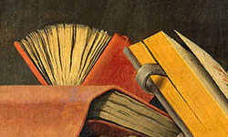

La librairie L'indépendante
Un havre de discorde à Trounepioche.
Derrière les cloisons de la boutique séjournent les ouvrages d'une modestie rare. Et les clients de sourire du haut de toutes ses babines s'ils ont loisir de sillonner les rangées de bois, les promontoires gorgées d'histoires, de récits, de pensées, qu'on ne consultera jamais sans s'émouvoir. Tel est l'objet de L'indépendante : un projet sans détour porté par un libraire unique.
Noël Frémond : un libraire à nul autre pareil

Noël Frémond a fondé la librairie L'indépendante en 1995.
Depuis ce jour, il n'eut de cesse de pratiquer son métier avec l'obstination de celui qui pense que donner le meilleur ne s'organise pas en un jour (ni en deux). Derrière les rayonnages les plus recherchés de Tournepioche, son intrépidité légendaire a traversé les murs de son échoppe au point qu'il se murmure que la Bonnemine du comté ne commanderait rien qui ne soit passé sous ses fourches conseils.